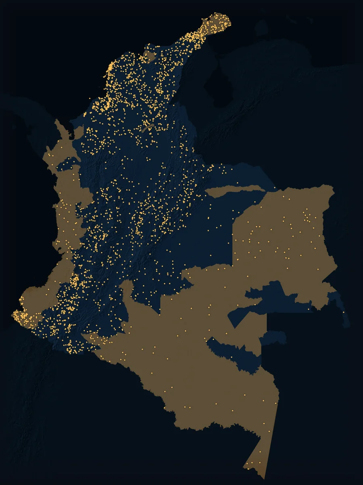
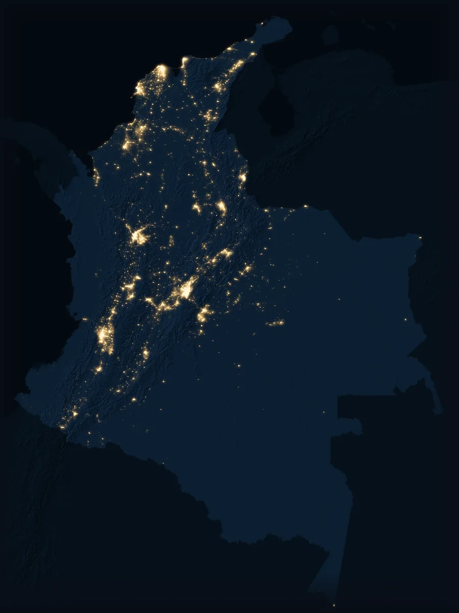

De las viviendas rurales sin luz está en municipios cuya cabecera queda a menos de 50 km de una subestación.
UPME · cálculo propio

Capítulo 05 Zonas no interconectadas
En Colombia hay pueblos donde la luz llega seis horas al día. No es un apagón: es el horario. Recorre las 162 localidades medidas, la distancia a la red, la cuenta del diésel y lo que cambia con el sol.
Darién de noche · Vuelo renderizado en Blender
01 · El video Capítulo 05
La luz no falta por la distancia: falta por plata y por decisión. Míralo y luego enciende el reloj de las localidades, mide la red y haz la cuenta del sol.
02 · IPSE 162 localidades con telemetría
Cada punto es una localidad no interconectada con su planta medida. Deja correr el día y mira cuántas tienen luz a cada hora. Tres de cada cuatro reciben menos de doce horas.
CREG Horas de servicio por tamaño
| Usuarios de la localidad | Horas al día |
|---|---|
| Más de 300 | 24 |
| 151 a 300 | 10 |
| 51 a 151* | 8 |
| Hasta 50 | 6 |
* Así aparece en el documento CREG 901 299 de 2025, que repite 151 en dos tramos.
Cargando datos…
IPSE, telemetría de octubre de 2025 a septiembre de 2026: horas promedio de servicio al día. La telemetría no dice a qué hora: el horario del mapa es ilustrativo y centra el servicio en la noche.
03 · UPME ICEE 2024 y red de transmisión
Casi 1,46 millones de viviendas no tienen electricidad. Uno pensaría que están en la selva, lejos de todo. Arrastra la cortina: de un lado, las luces de noche; del otro, dónde están las viviendas rurales sin servicio y los municipios con localidades no interconectadas.
Cada punto naranja representa 400 viviendas rurales sin servicio, ubicado dentro de su municipio · UPME, ICEE 2024 · NOAA VIIRS


Luces de nocheSin servicioCargando datos…
La distancia se mide desde la cabecera de cada municipio hasta la subestación más cercana (UPME), no desde cada casa. Con 50 km el cálculo municipal da el 89,7 % de 1.026.550 viviendas rurales sin servicio analizadas.
De las viviendas rurales sin luz está en municipios cuya cabecera queda a menos de 50 km de una subestación.
UPME · cálculo propio
De cobertura rural donde la cabecera está a más de 2.000 m; por debajo de 200 m, 62,7 %. La montaña está mejor conectada.
UPME · ICEE 2024 · Copernicus DEM
Del hueco rural está en el Caribe. Y el 21 % de sus edificaciones se ve a oscuras de noche.
UPME · Open Buildings y VIIRS (GEE)
De las casas rurales sin luz está en municipios donde al menos la mitad de la gente del campo es pobre.
DANE · IPM municipal 2018
04 · SUI-Superservicios Facturación de las zonas no interconectadas
Más allá de la red, los pueblos del Pacífico, la Amazonía y la Orinoquía generan su luz con plantas diésel. Por cada kilovatio hora residencial, el Estado pone en subsidio dos veces y media lo que pagan los propios usuarios.
En Mitú el subsidio llegó a 2.285 pesos por kWh en 2025.
05 · Modelo propio 25 cabeceras, hora por hora
Hicimos las cuentas hora por hora, con el sol de cada pueblo y con lo que de verdad les cuesta hoy la energía. En 24 de las 25 cabeceras, sumar paneles y baterías sale más barato que el diésel. Pasa el cursor por cada una.
Modelo ZNI v8: NASA POWER y ERA5 para el sol; costo real de generación de la Superservicios (Q1-2026) y eficiencia medida de 13 a 16 kWh por galón. Bahía Solano genera sobre todo con la PCH Mutatá. Es un escenario modelado, no una instalación existente.
Cabeceras donde el híbrido solar con baterías abarata el diésel.
Modelo propio
Para pagar la inversión (mediana; entre 3,9 y 5,8 años). Son unos 652.000 millones de pesos.
Modelo propio
Galones de diésel que se dejarían de quemar cada año, unas 88.000 toneladas de CO₂.
Modelo propio
De la energía de Mitú podría venir del sol. El diésel llega por río y, en las sequías, en avión.
Modelo propio · Mitú, Vaupés
Y la red Trazado de menor costo · DEM de 12,5 m
En el modelo, la conexión a la red gana solo en dos pueblos: Nuquí y Unguía. La línea de Nuquí a Quibdó tendría 73 km, y el 97 % de su franja pasa por bosque.
Trazado propio sobre el DEM de 12,5 m · ESA WorldCover y Hansen en Google Earth Engine
06 · UPME Plan Indicativo de Expansión de Cobertura 2024–2028
Conectar a todas las viviendas cuesta treinta y dos billones de pesos. Y la solución más usada no es extender cables: son las microrredes.
De pesos para llevar la luz a todas las viviendas que faltan.
UPME · PIEC 2024–2028
Millones de pesos en promedio por cada vivienda conectada.
UPME · PIEC
De la inversión del plan va a microrredes, que atienden el 47,4 % de las viviendas.
UPME · PIEC
El subsidio frente a lo que pagan los usuarios de las zonas no interconectadas en 2025.
SUI · Superservicios
La luz no falta por la distancia. Falta por plata y por decisión.

Volver Portada del atlas